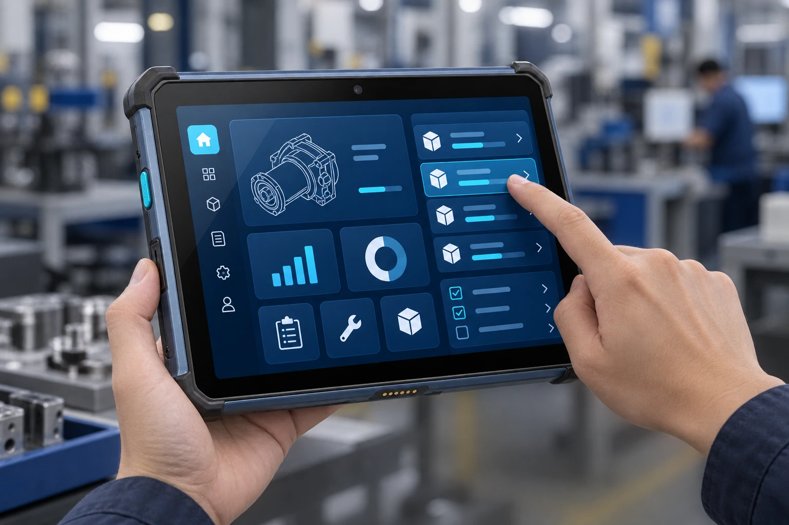
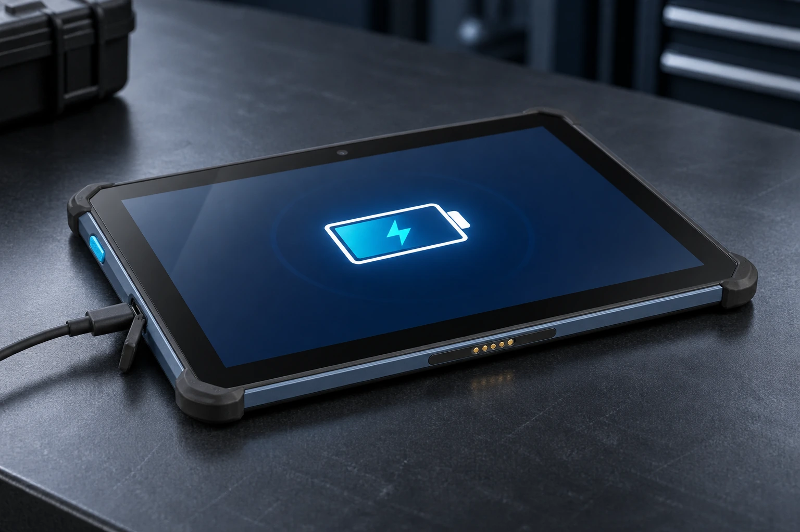
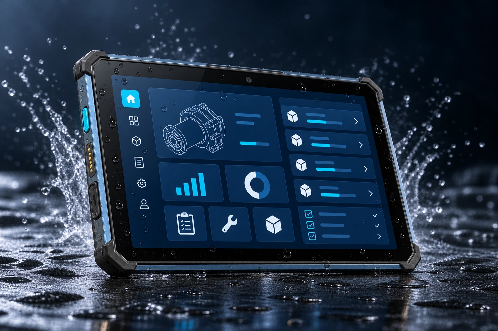
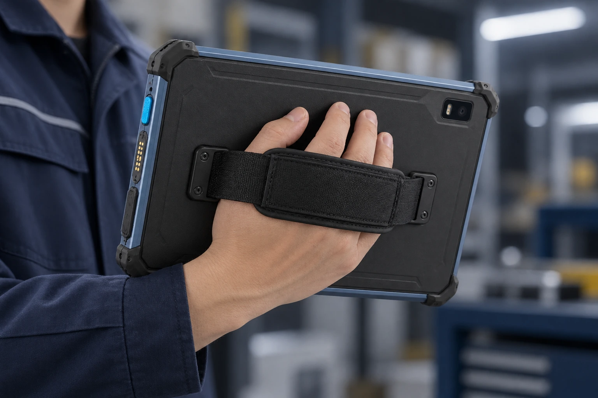

FHD 多点触控
图纸、工单与设备信息清晰呈现。
兼顾显示、性能、连接与防护，满足制造和维保岗位的日常需求。
图纸、工单与设备信息清晰呈现。
查询、记录与应用切换顺畅衔接。
结合双频 Wi-Fi，同步现场数据。
支持快充，便于作业间隙补电。
按项目扩展物料与资产识别。
适应粉尘、泼溅与频繁搬运。
Qualcomm SM6115 八核平台，搭配 6GB + 128GB 建议配置，兼顾业务运行、资料查询与数据同步。基于 Android 13，适配制造、维保和移动管理应用。
10.1 英寸 FHD 多点触控屏，为图纸、任务清单与多栏业务界面提供充足空间。在一块屏幕上查看设备资料、填写作业记录，让现场信息更直观。

8000mAh 大容量电池建议方案，兼顾大屏操作与移动作业的续航需求。支持快充，便于在休息或任务交接时补电，按实际工作负载安排使用与充电。

IP67 防护与 1.2 米跌落建议方案，面向工业现场的粉尘、泼溅和日常搬运。低轮廓护角与简洁窄侧框，为车间巡检、设备维保和移动作业提供可靠支撑。

围绕手持巡检、桌面操作与车载任务，按项目评估手带、安装支架和充电配件。贴合背盖的手带便于移动握持，让平板在移动与固定工位之间灵活衔接，具体配件与接口以项目方案为准。

从网络同步到外设连接与数据采集，融入现有作业流程。
通过移动网络和现场无线网络，查询业务资料、回传工单与作业记录。
配合现场外设与近场识别需求，拓展日常操作方式。
可选专业二维扫描模组，为物料追踪、资产识别与工序核验提供支持。
面向需要查看图纸、记录数据与处理现场任务的岗位。
查看电子作业指导与工艺资料，完成生产报工、质量记录和工序确认。
查询设备档案与图纸，填写巡检结果、故障记录和维修工单。
结合项目支架与业务应用，承接调度信息和移动任务管理。
按业务需求选择配置，详细方案欢迎与我们沟通。
以上为建议配置，具体参数可能因项目需求及产品版本调整，请以最终规格书为准。
与我们沟通 QC606 的采集模组、安装配件与业务软件需求。